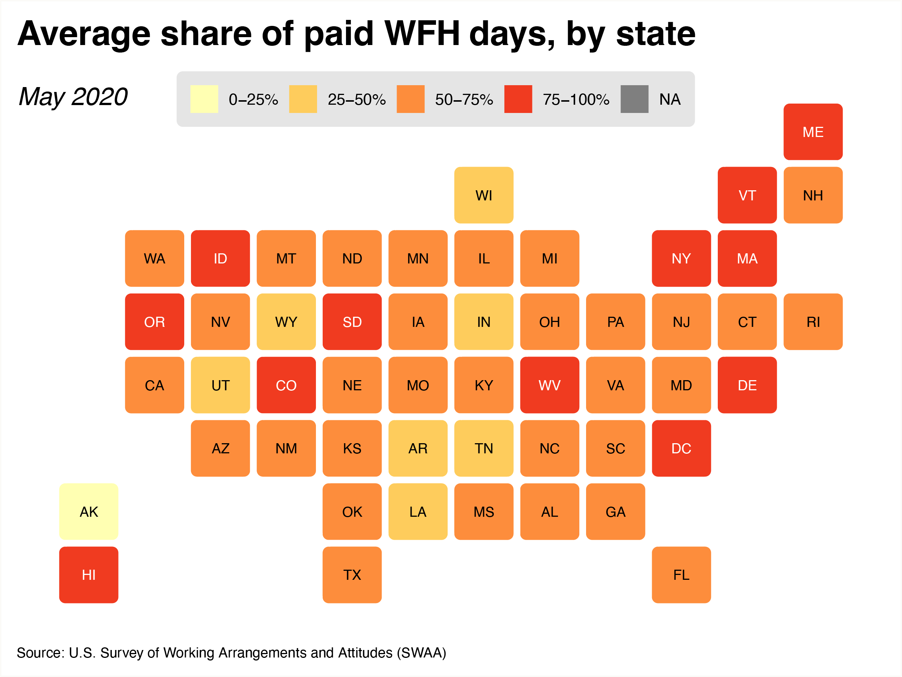
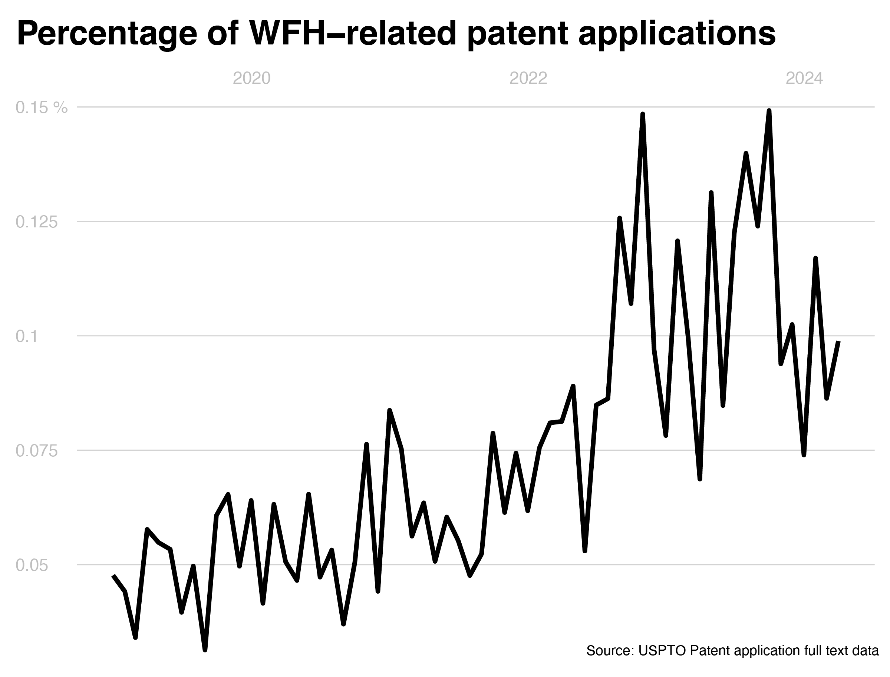
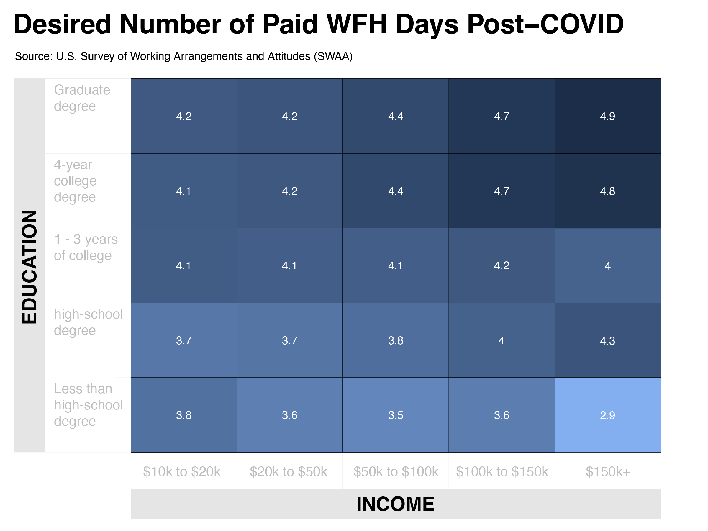

One of the ideas we have come to accept in this 'new normal' is that working from home is a valid option for many jobs. In March 2021, a survey showed that over 65% of U.S. workers indicated that perceptions of working from home had improved among the people they knew.
Stay at home orders initially forced firms to accommodate working from home. But now, research shows that working from home may offer significant cost and time savings, while not hindering or potentially increasing productivity.
Using data from the U.S. Survey of Working Arrangements and Attitudes (SWAA) we can see how often the average worker worked from home during the pandemic, and 3 years later.
While the average share of paid working days worked from home decreased in most states since May 2020, most states are still averaging between 25-50% days worked from home per worker, which is far above 5%, the pre-COVID average (Barrero et al., 2021).
Companies were initially forced into remote policies, and some were better equipped than others. This meant a lot of time and money was invested in learning to WFH effectively. In October 2020, the average amount of money spent on WFH-related equipment or infrastructure per worker was over $1,000.
Assuming half of the U.S. population is in some form of employment, this amounts to over $150 billion spent across the U.S. on WFH-related equipment or infrastructure, which is about half a percent of the U.S. gross domestic product.
This huge surge in demand lead to thousands of new technological innovations. The number of WFH-related patent applications has grown year over year every year since 2019.
However, the flexibility to WFH is only available to certain professions. Many employees whose work involves face-to-face customer service or tools that are only available at the employer's premises, are limited in their ability to work from home effectively.
Still, there is a large and growing subset of workers whose work can be done from home. They tend to be more educated and high-income earners, and work industries such as finance, tech and media.
Grouping by the income and education bins survey respondents fall into, we can see a clear trend between higher education and income levels and higher desired number of paid work from home days per week post-COVID.
What can employers do with this information?
Most employees are in a situation where their desired optionality to work from home is less than their employer's plans for them.
Employees, especially those with higher education and income levels, are willing to take a sizeable pay cut--8% on average--for the option to work from home, at least part of the week (Barrero et al., 2021). Not only does it save them commute time, but many workers reported increased efficiency at home in the SWAA.
As a way to expand the applicant pool geographically, and attract and retain better talent, employers should look to accomodate remote or hybrid arrangements, if possible.
Created by Maxwell Moody